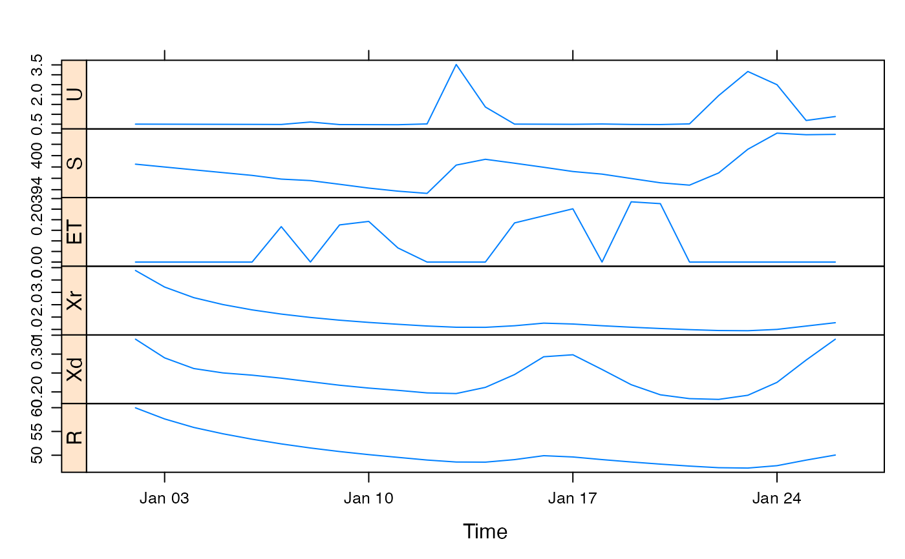
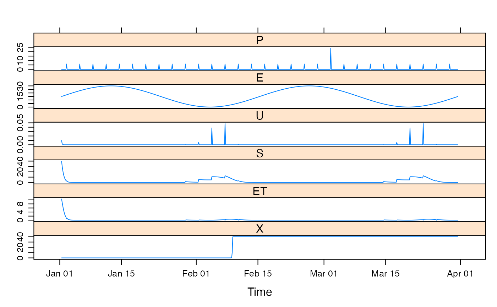
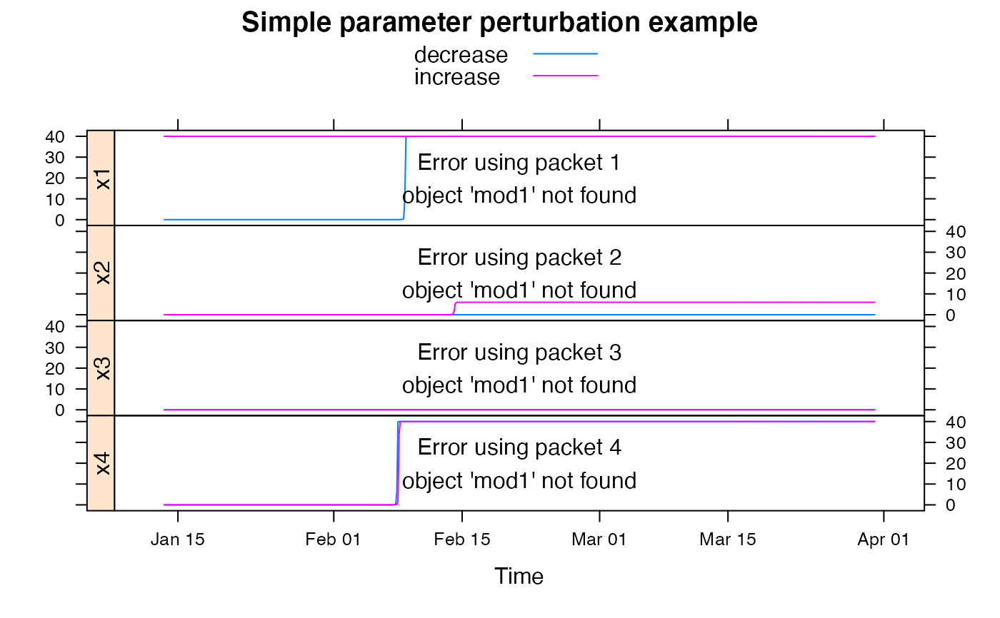
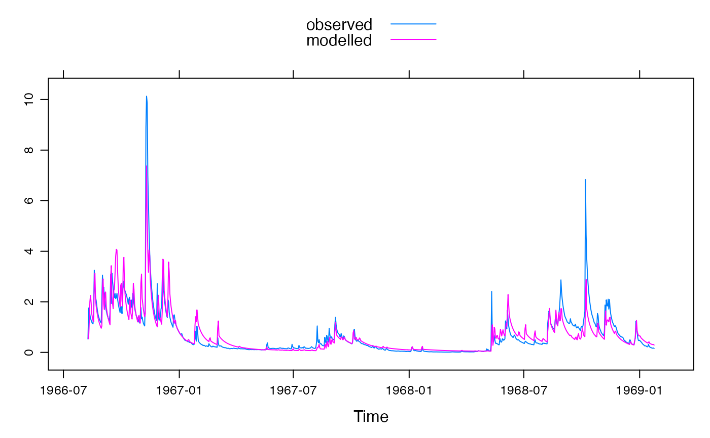

GR4J model (modele du Genie Rural a 4 parametres Journalier).
gr4j.sim( DATA, x1, etmult = 1, S_0 = 0.5, return_state = FALSE, transformed = FALSE ) gr4jrouting.sim( U, x2, x3, x4, R_0 = 0, split = 0.9, return_components = FALSE, epsilon = hydromad.getOption("sim.epsilon"), transformed = FALSE )
| DATA | time-series-like object with columns P (precipitation, mm) and E (potential evapo-transpiration, mm). |
|---|---|
| x1 | maximum capacity of the production store (mm). |
| etmult | Multiplier for the |
| S_0 | Initial soil moisture level as fraction of |
| return_state | to return the series U, S (storage) and ET (evapotranspiration). |
| transformed | transform parameters before use to improve
identifiability. They can be untransformed using
|
| U | effective rainfall series. |
| x2 | groundwater exchange coefficient (mm). |
| x3 | one day ahead maximum capacity of the routing store (mm). |
| x4 | time base of unit hydrograph UH1 (time steps). |
| R_0 | Initial groundwater reservoir level as fraction of |
| split | Fraction to go into quick flow routing, usually fixed at 0.9. |
| return_components | to return the series Xr, Xd and R (reservoir level). |
| epsilon | values smaller than this in the output will be set to zero. |
the simulated effective rainfall, a time series of the same length as the input series.
The default parameter ranges were taken from the "80 given in Perrin et. al. (2003).
Perrin, C., C. Michel, et al. (2003). "Improvement of a parsimonious model for streamflow simulation." Journal of Hydrology 279(1-4): 275-289
http://www.cemagref.fr/webgr/Modelesgb/gr4j/fonctionnement_gr4jgb.htm
hydromad(sma = "gr4j", routing = "gr4jrouting") to
work with models as objects (recommended).
Felix Andrews felix@nfrac.org and Joseph Guillaume josephguillaume@gmail.com
## view default parameter ranges: str(c( hydromad.getOption("gr4j"), hydromad.getOption("gr4jrouting") ))#> List of 5 #> $ x1 : num [1:2] 100 1200 #> $ etmult: num 1 #> $ x2 : num [1:2] -5 3 #> $ x3 : num [1:2] 20 300 #> $ x4 : num [1:2] 1.1 2.9#> #> Hydromad model with "gr4j" SMA and "gr4jrouting" routing: #> Start = 2000-01-01, End = 2000-03-31 #> #> SMA Parameters: #> lower upper #> x1 100 1200 #> etmult 1 1 (==) #> Routing Parameters: #> lower upper #> x2 -5.0 3.0 #> x3 20.0 300.0 #> x4 1.1 2.9## example from ## http://www.cemagref.fr/webgr/Scilab/CONT_EN/HELP_HYDROGR/c_GR4J.htm dat <- cbind( P = c( 0, 0, 0, 0, 0, 0.04, 0.59, 0.03, 0.01, 0.16, 0.37, 8.76, 2.65, 0.05, 0.02, 0.02, 0.38, 0.00, 0.02, 0.46, 4.46, 7.71, 5.71, 0.79, 1.33 ), E = c( 0, 0, 0, 0, 0, 0.24, 0.24, 0.24, 0.24, 0.24, 0.25, 0.25, 0.26, 0.27, 0.28, 0.32, 0.33, 0.34, 0.35, 0.36, 0.36, 0.37, 0.37, 0.38, 0.38 ) ) datz <- zoo(dat, as.Date("2000-01-01") + 1:nrow(dat)) modz <- hydromad(datz, sma = "gr4j", routing = "gr4jrouting", x1 = 665, x2 = 1.18, x3 = 90, x4 = 3.8, S_0 = 0.6, R_0 = 0.7 ) xyplot(predict(modz, return_state = TRUE, return_components = TRUE), strip = FALSE, strip.left = TRUE )## simulate with some arbitrary parameter values mod1 <- update(mod0, x1 = 100, x2 = 20, x3 = 1, x4 = 10) ## plot results with state variables testQ <- predict(mod1, return_state = TRUE) xyplot(cbind(HydroTestData[, 1:2], gr4j = testQ))############################################ ## show effect of increase/decrease in each parameter parRanges <- c( hydromad.getOption("gr4j")[1], hydromad.getOption("gr4jrouting") ) parsims <- mapply( val = parRanges, nm = names(parRanges), FUN = function(val, nm) { lopar <- min(val) hipar <- max(val) names(lopar) <- names(hipar) <- nm fitted(runlist( decrease = update(mod1, newpars = lopar), increase = update(mod1, newpars = hipar) )) }, SIMPLIFY = FALSE ) xyplot.list(parsims, superpose = TRUE, layout = c(1, NA), strip = FALSE, strip.left = TRUE, main = "Simple parameter perturbation example" ) + latticeExtra::layer(panel.lines(fitted(mod1), col = "grey", lwd = 2))############################################ # Example optimisation, using transformed parameters data(Cotter) x <- Cotter[1:1000] # Specify gr4j model mod0 <- hydromad(x, sma = "gr4j", routing = "gr4jrouting", transformed = TRUE) # Use transformed parameter ranges mod0 <- update(mod0, newpars = gr4j.transformpar(c( hydromad.getOption("gr4j"), hydromad.getOption("gr4jrouting") ))) # Allow etmult to vary, because we're using temperature data instead of PET. mod0 <- update(mod0, etmult = c(0.05, 1.5)) # Broaden a single parameter range, just as an example mod0 <- update(mod0, x1 = gr4j.transformpar(list(x1 = c(100, 5000)))[["x1"]]) mod0#> #> Hydromad model with "gr4j" SMA and "gr4jrouting" routing: #> Start = 1966-05-01, End = 1969-01-24 #> #> SMA Parameters: #> lower upper #> x1 4.605 8.517 #> etmult 0.050 1.500 #> Routing Parameters: #> lower upper #> x2 -2.3124 1.8184 #> x3 2.9957 5.7038 #> x4 -0.5108 0.8755#> #> Hydromad model with "gr4j" SMA and "gr4jrouting" routing: #> Start = 1966-05-01, End = 1969-01-24 #> #> SMA Parameters: #> x1 etmult #> 6.0224 0.1227 #> Routing Parameters: #> x2 x3 x4 #> -0.0004503 4.6048488 -0.5108256 #> #> Fit: ($fit.result) #> fitByOptim(MODEL = mod0) #> 277 function evaluations in 6.01 seconds#> #> Call: #> hydromad(DATA = x, transformed = TRUE, sma = "gr4j", routing = "gr4jrouting", #> x1 = 6.02237, x2 = -0.000450293, x3 = 4.60485, x4 = -0.510826, #> etmult = 0.122697) #> #> Time steps: 900 (0 missing). #> Runoff ratio (Q/P): (0.7028 / 2.285) = 0.3075 #> rel bias: -0.02825 #> r squared: 0.7685 #> r sq sqrt: 0.8447 #> r sq log: 0.8456 #> #> For definitions see ?hydromad.stats #>xyplot(fit1)#> $x1 #> [1] 412.5549 #> #> $x2 #> [1] -0.0004502931 #> #> $x3 #> [1] 99.96787 #> #> $x4 #> [1] 1.1 #> #> $etmult #> [1] 0.1226971 #>